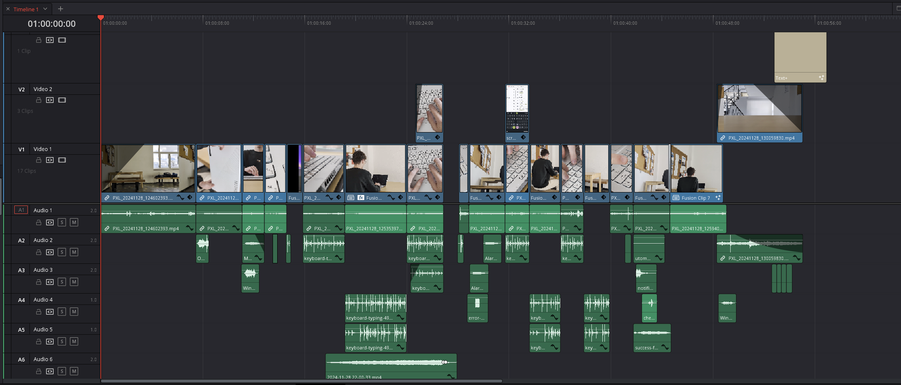

Tvorba
- Video natočeno na mobil (Google Pixel 8)
- Výběr lokace s vhodným osvětlením
- Natáčeno na FEL na chobě
- Nátáčeno ve 4K (3840 x 2160), 30 FPS
- Pří natáčení zamčená expozice, pro lehčí postprodukci
Zpracování videa
- Videa z mobilu používají vlastní kodek - nejdou zpracovávat v DaVinci Resolve
- Převod do správného formátu pomocí FFMPEG
- Další podpůrná videa byla stažena z youtube (např. psaní kódu)
- Stabilizace videa, barevná korekce a změna kontrastu
- Kompozice záběru:
- Trackování videa kódu
- Transformace videa - aby sedělo do perspektivy
- Změna režimu prolnutí - ztmavení (zobrazení pouze text)
- Finální přídání efektů - rozmazání, chromatická aberace
- Export videa do FullHD (1920 x 1080), 30 FPS, kodek H.264

Zvuk
- Ztlumení originálních zvuků z videa - velký ruch při natáčení
- Stažení zvukových efektů ve formátu wav - soundly
- Přidání hudby ze zvukové knihovny youtube
- Korekce a slazení hlasitostí jednotlivích zvuků